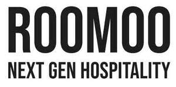

Trade Mark Journal No.2026/010 6 March 2026
UK00004341873 17 February 2026 (35,43)

International priority date claimed: 11 February 2026
(European Union Intellectual Property Office (EUIPO))
(019316057)
- Class 35
- Hotel business management; business management of hotel complexes; hotel management for third parties; hotel business management; consulting services in hotel administration and management; administrative management of hotels; advertising services; commercial business management; commercial administration; office work; organisation of fairs and exhibitions for commercial or advertising purposes; rental of advertising space; management consultancy services; consultancy services for the organisation and management of businesses, in particular in the hotel and catering sector; business management assistance; business information; supply services for third parties; public relations; recruitment of personnel.
- Class 43
- Hotel services; hotel accommodation management; temporary accommodation; information, advice and booking services for temporary accommodation; provision of temporary accommodation; hotel services for preferred customers; hotel accommodation services; hostels; provision of hotel and hostel accommodation; hotel information; provision of hotel information services via a website; accommodation reservations; accommodation reservations for travellers; hotel reservation services; provision of facilities for events, meetings and temporary offices; meeting room rental; conference room rental; rental and reservation of temporary accommodation; hotel and restaurant services [food]; restaurant services; cafeteria service; bar services; bars [pubs]; cocktail bars; delicatessens [restaurants]; wine tasting services (supply of beverages).
Room 00 Hostels & Hotels, S.L.U.
Representative: Gunnercooke LLP